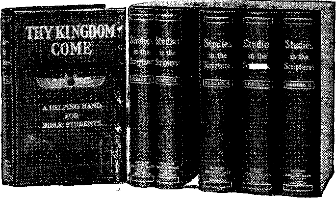

VOL. V.
No. 3.
BROOKLYN, N. Y.
Religious and Scientific Gleanings
REFORMATION BY SURGERY.
“The wonders performed by surgery constantly increase, and perhaps in no direction has the beneficence of the science been so much demonstrated as
WHERE ARE THE DEAD?
OUR FRIENDS, OUR NEIGHBORS; THE HOLY, THE UNHOLY; THE CIVILIZED, THE VILE?
The proper answer to this question stands related to our own destiny, colors and influences our theology and the entire trend of our lives! The correct answer gives strength, confidence, courage, and assists towards the spirit of a sound mind!
in the direction of making mental and moral cures through surgical operations. From time to time a number of cases have been reported whereby—with an operation on the head, removing some depression from the brain, or perhaps opening the skull to allow greater brain expansion—backward and vicious boys have been given normal mental and moral conditions and a fair chance in life.
“Edward E. Grimmell, when 14 years of age, received a blow on the head from a picket, which fractured the skull and left a discernible depression. His parents paid little or no attention to the incident, but the boy grew up and from time to time showed criminal tendencies. He made little progress at school and was Vicious, and was frequently the subject of police attention. After serving three terms in State’s prison he was finally arrested and tried for forgery. He did not deny any of the facts, and his counsel contended that his criminal impulses were the result of injuries to the head. Release of Pressure on Brain Changed
Course of Man’s Life.
•‘The Judge did not place credence in the claim made in his behalf, considered him a clever professional crook, dangerous to the community, and sentenced him to the Dannenfora prison. The man begged the prison surgeon to,.perform an op*--’iAidiT, a-
decent life, but could not resist the opportunity to commit crime whenever he had a chance. He preferred death to a continued career of crime, such as he felt he was doomed to have. He finally attracted the attention of an eminent surgeon of Boston, who performed the operation, relieved the pressure on the brain and changed the whole tendency of the man’s thought and action, and from having the most perverse and criminal nature prior to the operation, he has Since become, to all appearances, a moral man of the highest impulses.
“It has been found that surgical operations, removing adenoids and other growths of nose and throat, allowing proper breathing has changed many cases of stupid children into bright and active ones. Crime comes ordinarily through an abnormal physical condition; viciousness is considerably the result of Ignorance through the presence of abnormal conditions.”—Plattsburg Sentinel.
If accidents to the skull can produce degradation of morals, who will deny that the shape of the brain of the child is largely influenced by heredity—particularly by the mother? This agrees with the Scriptural declaration, “I was shapen In iniquity; in sin did my mother conceive me.”—Psalm 51:5.
Who will deny, further, that the father has much to do with the child’s physical vitality and vigor of constitution? But additionally, he is largely responsible for the mother’s surroundings and mental condition during the period of gestation. Injustice, harshness, cruel words at such a time from anybody, but particularly from the husband, would arouse in the mind of the mother grievous thoughts, Bure more or less to leave their impress upon the child she is carrying.
While enforcing law and order let us remember that a reign of sin and death is in progress. Let us sympathetically do all in our power to promote righteousness and to be helpful to those who are still in greater difficulty than ourselves along these lines.
Not only do such thoughts give us great charity toward all, but they cause us the more reverently to look up to God as the only One competent to fully release the groaning creation. .Looking into His Word we perceive that the entire Plan of Salvation for the race is along the lines of uplift from mental and physical weaknesses to full perfection in God’s likeness. And while praising the Almighty for this generous Plan soon to be put into operation for the world at the Second Coming of Messiah and the establishment of His Kingdom let us also note with joy our own privileges—our “High Calling of God, in Christ Jesus.”
“Men and brethren, let me freely speak to you of the patriarch David, that he is both dead and buried, and his sepulchre is with us unto this day. For David is not ascended into the heavens.” (Acts 2:29, 34.) “And no man hath ascended up to Heaven, but He that came down from Heaven, even the Son of Man.”—John 3:13.
For a man to declare himself uninterested in this subject would be to proclaim himself idiotic—thoughtless. If the ordinary affairs of this present life, food, raiment, finance, politics, etc., which concern us but for a few years, are deemed worthy of thought, study, how much more concern should we have in respect to the eternal future of ourselves and neighbors and mankind in general?
Of course, so important a question has had the most profound study ever since the reign of Sin and Death began, six thousand years ago. Ey this time the subject should be threadbare. The entire world should -be so thoroughly informed respecting this question that there would be nothing new to say and nobody curious to hear. But the large audiences of intelligent, thoughtful people which come to hear, and which listen with breathless interest to what we have to say, imply that, after all the study the subject has had, but few are thoroughly satisfied with Ulen' Co,/.' luuIouki. f ' ■
The Agnostic Answers the Question.
Before presenting what we claim is the Scriptural and only satisfactory answer to our query, we think it but proper respect to the intelligence and thought of our day and of past centuries to make general inquiries on the subject and have before our minds the most profound thoughts of the most astute thinkers of our race. We cannot, however, go into this matter elaborately and give lengthy quotations. We must content ourselves with brief, synoptical answers, which will be stated kindly and truthfully, and with a desire not to offend anybody, however much we may disagree with his conclusions. We recognize the right of every man to do his own thinking and to reach his own conclusions, whether these agree with our conceptions or not.
We. begin our examination by asking our agnostic friends, who boast of their untrammeled freedom of thought, “What say you, Free-thinkers, in reply to our query, Where are the dead?” Their answer is, “We do not know. We would like to believe in a future life, but we have no proof of it. Lacking the evidences, our conclusion is that man dies as does the brute beast. If our conclusion disappoints your expectations in respect to there being joy for the saints, it certainly, should be comforting to all as respects the vast majority of our race, who certainly would be much better off perished like the brute beast than to be preserved in torture, as the majority believe.”
We thank our agnostic friends for the courteous reply, but feel that the answer is not satisfactory, either to our heads or to our hearts, which cry out that there must, or should be, a future life; that the Creator made man with powers of mind and heart so superior to the brute that his pre-eminence in the Divine Plan should be expected. Furthermore, the brevity of the present life, its tears, its sorrows, its experiences, its lessons, will nearly all be valueless, useless, unless there be a future life—an opportunity for making use of these lessons. We must look further for some more satisfactory answer to our question.
The Heathen Answer to Our Query.
Since three-fourths of the world are heathen, the weight of numbers implies that they next should be asked for their solution to the question—Where are the dead? Heathenism gives two general answers:
(1) Prominent among them are those which hold to Transmigration. These reply to us, “Our view is that when a man deliberately opposed them—these alone meet the awful, hopeless fate.
Millions to Purgatory.
“The dead in general, according to our teaching, pass immediately to Purgatory, which is, as the n ime indicates, a place of purgation from sin, a place of penances, sorrows, woes, anguish indeed, but not hopeless. The period of confinement here may be centuries or thousands of years, according to the deserts of the individual and the alleviations granted. If you would know more particularly the Catholic teaching on this subject, we refer you to the writings of one of our great Catholics, the noted poet Dante, a loyal Catholic, at one time an Abbot, who died in a monastery with the full rights of the Church. Dante’s poem, ‘Inferno,’ graphically describes the tortures of Purgatory, as we understand the matter. You caa procure at almost any library an illustrated copy of this great Catholic poem.
“Dore, the artist, was also a prominent Catholic, and he portrayed Dante’s poem vividly and truthfully. The illustrations show the torments of Purgatory vividly— how the demons chase some until they leap over precipices into boiling water. They ply others with fiery darts. Others are burned with heads downward; others with feet downward in pits. Some are bitten by serpents. Still others are frozen, etc. We advise that you see Dante’s work, ‘Inferno,’ because it gives our Catholic view of the proper answer to your question, Where are the dead? The vast majority are in Purgatory. The billions of the heathen are there; because ignorance does not save, does not qualify for the Heavenly condition. All who enter Heaven must previously have been fitted and prepared Jr. a. jmw. itnnns!siMA.„t!nth.e^..feeaJheTJt, Millions of Protestants are there. They could not enter Heaven, except through the Catholic Church; neither would God deem them subjects of eternal hell, because their rejection of Catholicism was due to the confession of faith under which they were born and environed.
“Nearly all Catholics go to Purgatory, also, because, notwithstanding the good offices of our Church, our holy water, confessions, masses, holy candles, consecrated burying ground, etc., nevertheless, not having attained to saintship of character, they would be excluded from Heaven until the distressing experiences of Purgatory would prepare their hearts for Heaven. We hold, however, that for the reason stated, Catholics will not need to remain as long in Purgatory as will the Protestants and Heathen.”
We can thank our Catholic friends for so kind a statement of their case. We will not ask them where their Purgatory is, nor how they obtain the details of information respecting it, because such, questions might offend them, and we have no desire to offend. We merely wish for their ripest, clearest, maturest thought respecting our question. We regret t® say that the answer is not all that we might have hoped for in clearness and reasonableness and Scripturalness. Our hearts are heavy with the thought that our poor race, by reason of original sin, is already, as the Apostle says, a “groaning creation,” and the present life of a few years is full of trouble. It is saddening, discouraging to all of us, to think; of being obliged to have, when present trials and difficulties are past, even for centuries (not to mention eternity), suck-awful experiences as Dante portrays, even, though those centuries of anguish would purge us and fit us for the Divine presence and Heavenly glory. It may seem strange to some theologians, but it is nevertheless true, that the answer of Catholicism to our question is not muck better than the answer of Heathendom. Neither our heads nor our hearts are yet satisfied. It cannot be wrong to look further for something more satisfactory^ The Protestant Answer to Our Question.
I class myself as a Protestant without thereby meaning any disrespect to anybody else. I assume that the majority of my readers are Protestants. I remind you that many of us, in times past, have been inclined to boast a little of Protest* ant “breadth of mind,” “intelligence,** “education,” etc. May we not reasonably expect from Protestants a clear, logical, satisfactory answer to our question? Having found all the other answers UQ^
(Continued on page 2, column 2).
dies he does not die, but merely changes his form. His future estate will correspond to his present living, and give him either a higher or a lower position. We believe that we lived on earth before, perhaps as cats, dogs, mice, elephants, or what not, and that if the present life has been wisely used, we may reappear as men of nobler talents, as philosophers, etc.; but if, as usual, life has been misspent, at death we will be remanded to some lower form of being—an elephant, a worm, or what not. It is because of this belief that we are so careful in respect to our treatment of the lower animals and refuse to eat meat of any kind. Were we to trample ruthlessly on the worm, our punishment might be to be given a form in which we ourselves would be treated ruthlessly after the change which we call death.”
(2) The other large class of heathen believe in a spirit world with happy hunting grounds for the good and a hell of varied torments for the wicked. We are told that when people seem to die they really become more alive than ever, and that the very moment they cross the river Styx they go to the realms of either the blessed or the forever doomed, and that there are steps, or degrees, of punishment and reward. We inquire, Where did you receive these views? The answer is, They
We know, not where they came from. Our learned men have handed them down to us as truths, and we have accepted them as such.
But Heathenism’s answer is not satisfactory to bur heads and hearts. We must look further. We must not trust to speculation. We must look for Divine Revelation; the Message from Him with whom we have to do—our Creator.
The Catholic Answer to Our Question.
Turning from Heathenism, we address our question to that intelligent one-fourth of the world’s population known as Christendom. We say, Christendom, What is your answer to the question? The reply is, “We are divided in our opinion, more than two-thirds of us holding the Catholic, and nearly one-third the general Protestant view.” Let us hear the Catholic View (Greek and Roman) first, then, because age, as Well as numbers, suggests such precedence.
Catholic friends, give us, please, the results of your labors and studies, the conclusions of your ablest thinkers and theologians, in respect to the Revelation which you claim to have from God on this subject, Where are the dead? We will hear you thoughtfully, patiently, un-biasedly. Our Catholic friends respond: “Our teachings are, very explicit along the lines of your question. We have canvassed the subject from every standpoint in th a light of Divine Revelation. Our conclusion and teaching are that when any one dies he goes to one of three places: first the saintly, of whom we claim there are but a'few, go immediately to the presence of God, to Heaven. These are referred to by our Lord, saying, ‘Whosoever doth not bear his cross and come after Me, cannot be My disciple.’ (Luke 14:27.) Those who faithfully bear the cross are the Little Flock, the Elect. Respecting these Jesus says, ‘Strait is the gate, and narrow is the way, that leadeth to life, and few there be that find it.’ (Matthew 7:14.) These saintly do not include our clergy, not even our bishops, cardinals and popes; for you will find that when any of these die it is custom of the Church that masses be said for the repose of their souls. We would not say masses for any we believe to be in Heaven, because there surely is repose for every soul; neither would we say masses for them if we believed them to be in eternal hell, for masses could not avail them there. We might remark, however, that we do not teach that many go to the eternal hell. It is our teaching that only incorrigible heretics—persons who have had a full knowledge of Catho-|ic (doctrines and who have wilfully and
PUBLISHED AT
! 13-17 HICKS ST.. BROOKLYN, N. Y. C. W. HEK, Editor.
Monthly—12 cts. a year. Single copies, 1c.
An Independent, Unsectarian Religious Newspaper, Specially-Devoted to the Forwarding of the Laymen’s Home Missionary Movement for the Glory of God and Good of Humanity.
~t?> US THE SCRIPTURES CLEARLY TEACH
That the Church is “the Temple of the Living God’’—peculiarly “His workmanship;” its construction has been in progress throughout the Gospel Age—ever since Christ became the world's Redeemer and Chief Corner Stone of His Temple, through which, when finished, God’s blessing shall come “to all people,” and they find access to Him.— 1 Corinthians 3:16, 17; Ephesians 2:20; Genesis 28:14; Galatians 3:29.
That meantime the chiseling, shaping and polishing of consecrated believers in Christ’s Atonement for sin progresses; and when the last of these “living* ® tones,” “Elect and precious,” shall ®iave been made ready, the great Master 'Workman will bring all together in the SFirst Resurrection; and the Temple ®hall be filled with His glory, and be the wneeting place between God and men throughout the Millennium.—Revelation 15:5-8; 21:3.
That the Basis of Hope, for the Church and the World, lies in the fact that Jesus Christ, by the grace of God, tasted death for every man,” “a Ransom for all,” and will be “the true Light which lighteth every man that cometh Fnto the world,” “in due time.”—Hebrews 2:9; John 1:9; 1 Timothy 2:5, 6.
That the Hope of the Church is that she may be like her Lord, “see Him as He is,” be “partaker of the Divine nature,” and share His glory as His joint-heir.— 1 John 3:2; John 17:24; Romans 8:17; 2 Peter 1:4.
That the present mission of the Church, is the perfecting of the saints for the future work of service; to develop in herself every grace; to be God’s witness to the world; and to prepare to be kings and priests in the next Age.—Ephesians 4:12; Matthew 24:14; Revelation 1:6; 20:6.
That the hope for the World lies in the blessings of knowledge and opportunity to be brought to all by Christ’s Mil-lennial Kingdom—the Restitution of all that was lost in Adam, to all the willing and obedient, at the hands of their Redeemer and His Glorified Church— when all the, wilfully picked will be, destroyed.—Acts 3:19-23; Isaiah 35.
We affirm the pre-existence of Jesus as the mighty Word (Logos—spokesman) "‘the beginning of the creation of God,” "‘the First-Born of every creature,” the active agent of the Heavenly Father, Jehovah, in all the work of creation. “Without Him was not anything made that was made.”—Revelation 3:14; Co-lossians 1:15; John 1:3.
We affirm that the Word (Logos) was made flesh—became the Babe of Bethlehem—thus becoming the Man Jesus, “holy, harmless, undefiled, separate from sinners.” As we affirm the humanity of Jesus, we equally affirm the Divinity <of Christ—“God also hath highly exalted Him, and given Him a name which is above every name.”—Hebrews 7:26; Phi-lippians 2:9.
We acknowledge that the personality of the Holy Spirit is the Father and Son; that the Holy Spirit proceeds from both, and is manifested in all who receive the begetting of the Holy Spirit and thereby become sons of God.—John 1:12; 1 Peter 1:3.
We affirm the resurrection of Christ—that He was put to death in flesh but quickened in Spirit. We deny that He was raised in the flesh, and challenge any statement to that effect as being un-scriptural.—1 Peter 3:18; 2 Corinthians 3:17; 1 Corinthians 15:8; Acts 26:13-15.
7 WONDERS OF MODERN WORLD.
A scientific magazine made a request to the Physical Department at Cornell to name seven wonders of the modern world selected from a list of fifty-seven outstanding inventions and structures submitted.
The faculty, graduates, and seniors in the physics seminary balloted, the award of the voting going to wireless telegraphy, synthetic chemistry, radium, antitoxins, aviation, the Panama Canal, and the telephone.—New York Times.
SAN FRANSISCO TO NEW YORK IN THREE DAYS. AND Ac HALF.
The acceleration of transcontinental railway travel during the past two years has been made so quietly that not many people are aware that the time from ocean to ocean has been reduced to less than three and a half days. The fact was recently brought into prominence by daily press notices of a trip made by an Australian passenger who left San Francisco at 10.40 P.M., March 2, and reached New York March 6, in time to catch the steamship sailing at noon the same day for Europe, the total time from 'San Francisco to New York being three days and • el.eY0«l ihours.—Scientific American.
(Continued from page 1, column 4) satisfactory, and having now come to the one-twelfth portion of our race, which has had most advantage every way, we might reasonably expect to find in its answer the quintessence of wisdom and proof from every quarter and from every age. But what do we find, dear friends? With shame I say it, We find the very reverse! We find that the voice of Protestantism as a whole (barring numerically insignificant denominations) giving the most absurd answer to my question that could be conceived—an answer which is put to shame by the Catholics, the heathen and the agnostics. Is not this marvelous? Can this be? It is written, “Faithful are the wounds of a friend.” Bear with me, therefore, while I expose to you the weakness of our position as Protestants; not with a view to our vexation and shame, but with the thought that our intelligent investigation of the subject can be turned to our advantage and enable us to know the Truth and to lift the true, Divine standard before the people, to the intent that we and all may come to clearer views of our Heavenly Father’s character, purposes and future dealings with our race.
Permit me, as gently as possible, to touch this sore spot. The removal of the bandages and the cleansing of the sore may cause us pain, but the investigation should be helpful, nevertheless. We got our name, Protestants, from the fact that our intelligent and well-meaning forefathers, who were Catholics, thought that they discovered inconsistencies and un-scripturalness in Catholic doctrines in which they had been reared. They protested against these, and hence came the name Protestants. We cannot defend all that they did to their enemies nor all that their enemies did to them.
One of the points of protest of our forefathers was that they could find nothing of Purgatory anywhere, nor any declaration respecting it in the Bible. With a simplicity that is certainly marvelous to us, they concluded that they would merely pick up their views of Purgatory and throw them away forever. This left them Heaven and Hell, into one of which, they said, every member of the race must go at death and there spend his eternity. Quite evidently these well-meaning forefathers of ours were not as long-headed, far-sighted and logical as we might have expected them to be, when they did not perceive the difficulty into which they were walking. Rather we should say, perhaps, that they did see something of the difficulty, but viewed matters differently from what we do. The theory of Calvin and Knox prevailed at that time amongst Protestants, and led each denomination to hope that it was God’s Elect, and that it would constitute the Little Flock who would go to Heaven, while all the remainder of mankind would be consigned' to hn' eternity of hfeltUrti.torture.
No longer does either Catholic or Protestant pray,
“God bless me and my v?ife, My son John and his wife, Us four and no more.”
Both Catholics and Protestants, looking back to that period which we often term the Dark Ages, have reason to give thanks to God for the anointing Of the eyes of our understanding, which enables us, we believe, to think more logically than our forefathers. Even those of us reared under the doctrine of Predestination have lost the idea that the heathen were passed by because they were predestinated to damnation. Instead, those who accepted the Westminster confession of faith are today the most zealous in the preaching of the Gospel amongst the heathen by missionary effort. We are glad of this. It is a sign that our hearts are in truer and nobler condition, even though our heads have not yet gotten into proper adjustment with our hearts; and we still look at crooked doctrines .and endeavor to imagine them altogether straight.
Theoretically, Protestant doctrines stand with the Bible and with Catholics, and declare that Heaven is, a place of perfection; that there can bo: no change to any who enter there; hence that all trial, all refinement, all chiseling, all polishing of character must b'e accomplished in advance of an eptrance into the abode of the saints. In a word, we agree that only the saints will ever enter there, the “pure in heart,” the “overcomers,” the “little flock,” who now. walk in the footsteps of Jesus. What about the remainder of mankind? Ah! there is the difficulty. Our larger hearts will not consent that all except the saints must suffer an eternity of torture, though this is the logic of our creeds. Our hearts protest, saying that three-fourths of humanity today are heathen, and that fully that proportion of humanity, altogether, have never heard of God and the terms of salvation.
. The Best of People Perplexed.
Our creeds perplex us; for, as our hearts will not permit us to think of these poor creatures going to an eternity of misery, neither will our heads permit us to say that they are fit for Heaven. Indeed, it would be at variance not only with the Scripture, but also with reason itself, to suppose Heaven with three-fourths of its inhabitants unregenerate in every sense of the word. Our forefathers merely spoiled things for us when they threw away Purgatory and kept the remainder of such arrangement. If we must object to Purgatory as being unscriptural, must we not equally object to the eternal torment of all the families of the earth as being unscriptural, especially when the Bible declares that “all the families of the earth shall be blessed” through Christ —blessed with a knowledge of the Truth and opportunity to come into heart-harmony with God and attain everlasting life through Christ. I believe that it is necessary to press this point of the unreasonableness of the eternal torment doctrine. Nevertheless, I will remind you of what ,our prominent Protestant theories are on the subject:
(1) The Calvinistic thought is that Divine Wisdom and Power planned for mankind in advance—knew of the fall of man in advance, and prepared therefor by the creating of a great place called Hell, and the manning of it with fire-proof devils, for the torment of the race—all except the Little Flock, the Elect. Love and Justice were left out of this calculation. (2) The other prominent Protestant theory, the Arminian, held today probably by the majority, insists that both Love and Justice created the world and arranged the torment, and that Wisdom and Power were not consulted; hence that God has gotten into difficulty, while endeavoring to do justly and lovingly by His creatures, because lacking in power to render the needed aid. The entire difficulty, dear friends, is that, in our reasoning on the subject, we have merely asked the opinions of men and have not sought the Word of the Lord.
I shall surprise you, I feel sure, when I bring to your attention now the clear, plain, reasonable, just, loving and wise Program of our Heavenly Father. It has been so long overlooked, so long buried under the rubbish of human tradition of the Dark Ages, that today “Truth is stranger than fiction.” Well did our Lord, through the Prophet, declare:
“As the heavens are higher than the earth, so are My ways higher than your ways, and My plans higher than your plans.”—Isaiah 55:9.
And what else should we expect than this—that God would be better than ourselves? Our Lord said, “Love your enemies, bless them that curse you, do good to them that hate you, and pray for them which despitefully use you.” (Matthew 5:44.) “If thine enemy hunger, feed him; if he thirst, give him drink.” (Romans 12:20.) In view of this, how strange to think that God would torture His enemies, and that eternally; and not only so, but torture also those who are not especially His enemies—the. ignorant, the heathen—all who do not become saints under present adverse conditions! From only the one standpoint can we get order out of confusion and regain the proper respect for our Creator and His dealings with our race. That is the standpoint of the Truth, as revealed to us in the Bible.
What Say tlje Scriptures?
All of the foregoing theories, be it noticed, are based upon the assumption that death does not mean death—that to die is to become more alive than before death. In Eden it was God who declared to our first parents, “Ye shall surely die.” It was Satan who declared, “Ye shall not surely die.” Notice that the heathen, as well as the Christians, have accepted Satan’s lie, and correspondingly rejected God’s Truth. Do they not all agree with the serpent’s statement, “Ye shall not surely die”? Do they not all claim that the dead are alive—much more alive than before they died? This, dear friends, has been our common point of mistake. We have followed the wrong teacher, the one of whom our Lord said, “He abode not in the Truth,” and that he is the father of lies.—John 8:44.
These false doctrines have prevailed amongst the heathen for many, many centuries, but they gained an ascendancy in the Church of Christ during the Dark Ages, and had much to do with producing the darkness thereof. If out forefathers had believed God’s testimony, “Thou shalt surely die,” there would have been no room for the introduction of prayers for the dead, masses for their sins, frightful thoughts respecting their torture. The Scriptures agree from first to last that “the dead know not anything” (Ecclesiastes 9:5), and that “their sons come to honor and they know it not; they come to dishonor and they perceive it not of them.” (Job 14:21.) It is the Scriptures that tell us where the dead are and their condition; that they are experiencing neither joy nor sorrow, pleasure nor suffering; that they will have no knowledge of anything done under the sun until their awakening in the Resurrection. I remind you of the wise man’s words, “Do with thy might what thy hand findeth to do, for there is neither wisdom nor knowledge nor device in the grave (Sheol) whither thou goest.” (Ecclesiastes 9:10.) I remind you that both in the Old Testament and in the New Testament it is written of both the good and the bad that they “fell asleep” in death. I remind you that the Apostle Paul speaks of those who “sleep in Jesus,” and of those who have “fallen asleep in Christ;” who, he declares, are perished if there be no resurrection of the dead. Could they perish in Heaven, or in Purgatory, or in . a hell of torment? Assuredly no one so teaches. They are already in a perished condition in the tomb; and the perishing would be absolute, complete, unless a resurrection be provided for their deliverance from the power of death. Hence we read, “God so loved the world that He gave His only begotten Son, that whosoever believeth on
Him should not perish, but have eternal life.”—John 3:16.
In a word, then, the Bible teaching is that man was made superior to all the brute creation—in the image itnd likeness of his Creator; that he possessed life in a perfect degree in Eden and might have retained it by full obedience. But in his trial, his testing, he failed, and came under the death sentence: “In the day that thou eatest thereof, dying, thou shalt die.” (Genesis 2:17.) There the dying began, which, after nine hundred and thirty years, brought Father Adam to the tomb and involved all of his children in his weaknesses and death sentence. He died in the very day, which the Apostle Peter explains was not a twenty-four-hour day, but a thousand-year Day, saying, “One day is with the Lord as a thou-' sand years.”—2 Peter 3:8.
During six of these great Days, the death sentence has brought man down in some respects to the level of the brute, and left him without hope of future life, except as God might take compassion upon him and bring him some relief. This was hinted at in the statement that “The Seed of the woman should bruise the serpent’s head.” It was yet further elaborated to Abraham, saying, “In thee and in thy Seed shall all the families of the earth be blessed.”—Genesis 12:3; 28:14.
But not until four of the great thousand-year Days had passed did God send, forth His Son to redeem the race, by meeting Father Adam’s penalty, by dyingi “The just for the unjust, that He might, bring us to God.” (1 Peter 3:18.) As a result of that redemptive work accomplished at Calvary, there is to be “a resurrection of the dead, both of the just: and of the unjust”—a recovery from the death sentence, from the prison-house^ the tomb.—Acts 24:15.
Death, Not Torment, the Penalty.
Note well the mistake made in assuming eternal torment the wages of original sin, when the Scriptures explicitly declare that “The wages of sin is death”’—not eternal torment. (Romans 6:23.) We search the Genesis account of man’s fall, and the sentence imposed, but find no ■suggestion of a future eternal torture, but merely of a death penalty. Repeating it the second time, the Lord said, “Dust thou art, and unto dust shalt thou return.” (Genesis 3:19.) But He said not a word respecting devils, fire and torment. How, then, did the Adversary deceive our fathers, during the Dark Ages, with his errors, which the Apostle styles “doctrines of devils”? Note the fact that none of the prophecies mention any other than a death penalty for sin. Note that the New Testament likewise declares the same. St. Paul, who wrote more than one-half of the New Testament, and who assures us that he did “not shun to declare the whole counsel of God” (Acts 20:27-), says not a word about eternal torment. On the contrary, discussing this very matter of sin and its penalty, he says, “Wherefore, as by one man sin entered into the world, and death by sin; and so death passed upon all men, for that all have sinned.” (Romans 5:12.) Note that it was not eternal torment that passed upon one man, nor upon all men, but death. If some one suggests that death would not be a sufficient penalty for sin, all we would need to do would be to point him to the facts, and thus prove his suggestions illogical. For the sin of disobedience Adam lost his paradisaic home—lost eternal life and Divine fellowship, and instead got sickness, pain, sorrow, death. Additionally, all of his posterity, reasonably estimated at twenty thousand millions, disinherited so far as the blessings are concerned, have inherited weaknesses, mental, moral and physical, and are, as the Apostle declares, “A groaning crea-. tion.”—Romans 8:22.
View the situation! Twenty thousand millions born in sin and shapen in iniquity. (Psalm 51:5.) A few short hours or days or years of trouble and disobedience brought them to their death bed; the weeping friends stood around with breaking hearts. They were carried to the tomb—“ashes to ashes; dust to dust.” Reviewing the whole situation, and remembering that all the sickness, sorrow, pain, death, mental and moral decrepitude, result from Father Adam’s transgression, what sane man would say that the penalty has been insufficient, and that Justice could and does further demand that these millions shall, at death, be hurried to a hell of endless woe, trouble— tormented by demons to all eternity? Dear friends, the person who thus reasons indicates to you and to me that he either never had the power to reason, or that he has lost it.
God’s Penalty a Just One.
Let no one think the death penalty unjust and too severe. God could have blotted out Adam, the sinner, thus ful-
^THE^THIEF ON THE CROSS.
• What did Jesus mean by His S. d words, “Verily I say unto thee to- £ v day, thou shalt be with Me in Para- £. d dise”—if Paradise, lost 6,000 years n ago, will not be restored until the g d Second Coming of Jesus and the es- f ■W tablishment of His Kingdom? g-
d The full answer to this question r ■y! we shall be pleased to send you upon g d receipt of postal-card request. Ad- t. "W dress, Bible & Tract Society, 13 & d Hicks St., Brooklyn, N. Y. L
filling the sentence. He could have blotted out the race instantly. But would
we have preferred Life is sweet, even fering. Besides, it that present trials
that? Assuredly not. amidst pain and suf-is the Divine purpose and experiences shall
prove useful as disciplines; to prepare us for a wiser course than Father Adam took, when we shall be privileged to have a further individual trial. Our race would have been without hope of future existence, just as agnosticism claims, had it not been for Divine compassion a>nd the work of redemption.
Notice again why our Lord died for our redemption and see in that another evidence of the penalty. If the penalty against us had.been eternal torment, our redemption f.^m it would have cost our Lord that price. He would have been obliged to suffer eternal torment, the Just for the unjust. But eternal torment was not the penalty; hence Jesus did not suffer that penalty for us. Death was the penalty, and hence, “Christ died for our «ins.” “By the grace of God He tasted
•death for every man.” Whoever could ®ay Adam’s penalty could settle with Divine Justice for the sins of the whole world, because Adam alone had been tried —Adam alone had been condemned. We, his children, were involved through him. Behold the wisdom and the economy of •our Creator! The Scriptures assure us that He condemned the whole world for •one man’s disobedience, in order that He might have mercy upon all through the •obedience of another—Christ. We were •condemned to death without our consent •or knowledge. We were redeemed from death without our consent or knowledge.
Some one may inquire, “Are we, therefore, without responsibility? Will there be no individual penalty upon us for individual wrong doings”? We answer, “A just recompense of reward” will be meted out to all. But our eternal destiny can be settled only by ourselves, by our individual acceptance or rejection of the grace of God. The Scriptures clearly inform us that every sin, in proportion to its wilfulness, brings a measure of degradation which involves “stripes,” chastisements, corrections, to regain the lost standing. Thus the more mean and more wicked a man or woman may be, the greater will be his or her disadvantage in the resurrection time, and the more he will then have to overcome, to get back to all that was lost in Adam and redeemed by Christ.
“And the Dead Came Forth.”
At His First Advent our Lord’s miracles ■foreshadowed the great work which He, with His glorified Church, will accomplish for the world during the Millennium. Then ail the sick, lame, blind and dead will be revived, and if obedient, will be brought ultimately to full perfection. The dis
“All That Are in Their Graves.”
What Jesus did for Lazarus He intimated He would ultimately do for Adam and his entire race. Note His words: “The hour is coming, in the which all that are in the graves shall hear His voice, and shall come forth.’’ (John 5:28, 29.) Does this astonish us? If so, the reason is not far to seek. It is because we have gotten so far away from the teachings of the Bible, so fully immersed in the “doctrines of devils,” we have come so fully to believe in the serpent’s lie, “Ye shall not surely die,” so blinded to the Lord’s declaration, “Ye shall surely die,” and “the wages of sin is death.”
The remainder of John 5:29 explains that there will be two general classes of the dead to come forth. The first, those who have had their trial and Who have passed it successfully; the second, all the remainder- of mankind who have thus far failed to have Divine approval. The approved will come forth from the tomb unto a resurrection of life—perfection. The disapproved will come forth “unto a resurrection of judgment” (see Revised Version). The coming forth is one thing. The resurrection is another. The Apostle explains that they will come forth, “every man in his own order.” (1 Corinthians 15:23.) On thus being awakened, the privilege will be theirs of rising up, up, up, out of present degradation—mental, moral, physical—to the glorious perfection which Father Adam enjoyed in the image and likeness of his Creator. The uplifting or resurrection work St. Peter refers to as “the Restitution of all things, which God hath spoken by the mouth of all His Holy Prophets since the world began.”—Acts 3:21.
Scripturally why God has delayed the world’s blessing, the resurrection, for nearly two thousand years since the death of Jesus.1 The reason is such a glorious one! It must appeal to every true Christian heart and make it glad. It is this:
God purposed the selection of the Church before the blessing of resurrection should go to the world. This Church is called sometimes “the Body of Christ, which is the Church,” of which Jesus is the Head. Again, it is styled “the Bride, the Lamb’s Wife.” Ever since Pentecost the Heavenly Father has been drawing believers to Jesus’ side. After justifying them through faith in the precious blood, they have been invited to become Jesus’ disciples, His followers, to walk in His steps, to lay down their lives in the Father’s service, as Jesus did, and to develop in their hearts the fruits and graces of the Holy Spirit to such a degree that they might be called “copies of God’s dear Son.”
The promise to these is not the resurrection of Restitution promised to the world during the Millennium. On the contrary, these have a “Heavenly Calling.” After their consecration they are begotten of the Holy Spirit and then instructed in the School of Christ ffnd subjected to trials and disciplines in various ways, for the purpose of chiseling and polishing their characters as New Creatures. These
are a Little Flock, gathered, one here and
one there; tions, and tions, for ' are His.” her of the
“saints” from all denomina* I from outside of all denomina-“the Lord knoweth ^them that When the predestinated num-Elect shall have been selected
and polished, the present Age will end. Our Lord will come in Second Advent glory and Power. His elect Bride will constitute the First Resurrection class, changed from earthly to heavenly nature, “in a moment,” for “flesh and blood cannot inherit the Kingdom of God.”—1 Corinthians 15:50, 52.
Then will come the holy, invisible Millennial Kingdom, and the binding of Satan and the destruction of his unholy, invisible kingdom, and the setting loose -of agencies for the enlightening and uplifting of the whole race.
To those of my readers who are already
the Lord’s consecrated saints, up your heads, and realize than ever before the glorious the “Heavenly Calling,” of have been made partakers.
I say, Lift more fully fullness of which you To others
v .0 have the hearing ear and appreciate this High Calling, we say, Permit the love of God and of Christ to constrain you, and become disciples indeed of Jesus, laying aside every weight and every besetting sin, and entering the race and pressing with vigor' to its end and the crown of glory!
In the Minister’s morning sermon he told
And
And
obedidnt will be destroyed In the
Death.
Not Universalism, Either.
Nor does this mean universal everlast-' ing life, for the Scriptures declare that ’ suefy. as refuse to profit by the glorious opportunities of the Millennium, such as refuse to be uplifted to perfection, shall be destroyed from amongst the people, in the Second Death—“They shall be as though they had not been.” (Obadiah 16.) I remind you again of our Lord’s teaching on this subject. He entered the synagogue at Capernaum, and, being asked to read the lesson, He chose Isaiah, 61st chapter, and read respecting Himself and His work—that a part of it would be “to open the prison doors and set at liberty, the captives.” We are well aware that our Lord did not open any of the literal prisons, such as John the Baptist was confined in. He made no effort to succor him. The prison-house which Christ will open is the great prison-house, the tomb, which now holds approximately twenty thousand millions of our race. At His Second Advent our Lord will open • this great prison-house and cause all the
of the primal fall, how, henceforth, the wrath of God rested on each and all;
how, of His will and pleasure, all souls, save a chosen few,
Were doomed to eternal torture, and held ■ in the way thereto.
Yet never, by Faith’s unreason, a saintlier soul was tried,
And never the harsh old lesson a tenderer heart belied.
And after the painful service, on that pleasant, bright first day,
He walked with his little daughter thro’ the apple bloom of May.
Sweet in the fresh green meadow sparrow and blackbird sung;
Above him its tinted petals the blossoming orchard hung.
Around, on the’wonderful glory, the minister looked and smiled:
“How good is the Lord, who gives us these gifts from His hand, my child.
“Behold in the bloom of apples, and the
violets in the sward, A hint of the old lost beauty of
den of the Lord.”
Then up spake the little maiden, on snow and pink,
“O father! these pretty blossoms wicked I think.
the gar-
treading
are very
The most notable miracle which
our Lord performed was the awakening of Lazarus, His friend. Jesus had been gone several days when Lazarus took sick, and of course knew about the matter. Nevertheless, Martha and Mary sent Him a special message, saying, “Lord, behold he whom Thou lovest is sick.” (John 11:3.) They knew of Jesus’ power to heal, even by the word of His mouth. They had faith that if He could help strangers, He would surely be glad to assist His friend. But Jesus remained where he was and allowed Lazarus to die and a rude shock to come to the dear sisters. Then He said to His disciples, “Our friend Lazarus sleepeth.” (Johnll:ll.) Then,coming down to their comprehension, he added, “Lazarus is dead; and I am glad for your sakes that I was not there.”—John 11:14, 15.
He was glad to let His friend fall asleep In death, because it would provide a special opportunity for a special miracle. Then, with His disciples, He began the three-days’ journey to Bethany. We cannot blame the sorrowing sisters that they felt hurt that the Messiah should apparently neglect their interests. They knew that He had the power to relieve them. Martha’s gentle reproof was, “Lord, if Thou hadst been here, my brother had not died. Jesus saith unto her, thy brother shall rise again. Martha saith unto Him, I know that he shall rise again in the resurrection at the last day.” (John 11:23, 24.) Notice that our Lord did not say, “Thy brother is not dead; thy brother is more alive than he ever was; he is in Heaven or in Purgatory.” Nothing of the kind! Purgatory had not yet been invented, and He knew nothing of it. And as for Heaven, our Lord’s testimony is, in our text, “No man hath ascended into Heaven, but He that came down from Heaven.” Martha also was well informed. The errors of the Dark Ages had not yet supplanted the Truth. Her hope for her brother was the Scrip-tural'dne; that he wrnuld rise in the resurrection, in the last day, the Millennial Day, the seventh of the great thousandyear Days from creation.
Our Lord explained that the power of resurrection was vested in Himself, that He was there with her, and could give
“Had there been no Garden of Eden, there never had been a fall;
And if never a tree had blossomed God would have loved us all.”
. .- - , . . “Hush, child!” the Father answered, “By
prisoners to come forth, just as truly as pjis decree men fell
jn i^e case of Lazarus. Nor «111 <is ways are in clouds
He call them from Heaven, Purgatory nor Hell, but just as He declared, “Lazarus, come forth,” so “all that are in their graves shall hear His voice and come
He doeth all things well.
but
“And whether by His ordaining to us com— eth good or ill,
Joy or pain, or light or shadow, we must fear and love Him still.”
“Oh, I fear Him!” said the daughter, “and
But
The
And
I try to love Him, too;
I wish He were kind and gentle— kind and loving as you.” minister groaned in spirit, as the tremulous lips of pain
wide, wet eyes, uplifted, questioned his own in vain.
Bowing his head, he pondered the words of his little one.
Had he erred in his life-long teachings^ and wrong to his Master done?
To what grim and dreadful idol had he lent the holiest Name?
Did his own heart, loving and human, the God of his worship shame?
And lo! from the bloom and greenness, from the tender skies above,
And the face of his little daughter, he read a lesson of love.
No more as the cloudy terror of Sinai’ss mount of law,
But as Christ in the Syrian lilies the vis-
And
The
ion of God he saw.
as when, in the clefts of Horeb, off old was His presence known, dread, ineffable glory was infinite goodness alone.
Thereafter his hearers noted in his prayers a tenderer strain,
And never the message of hatred burned on his lips again.
And the scoffing tongue was prayerful and the blinded eyes found sight, And hearts,■ as flint grew -.sogfc-
in his warmth and light.
relief to them without waiting. Martha told our Lord that it was too late; that putrefaction had set in by this time. But Jesus insisted on seeing the tomb, and when He arrived at it, He cried, “Lazarus, come forth!” And we read, “He that was dead came forth.” (John 11:43, 44.) Mark well that it was not the living that came forth, but that Lazarus that was really dead. Mark well that he was not called from. Heaven, nor from Purgatory.
forth.”
Where Are the Dead?
My dear friends, you have had before you? minds the answers to our question from the highest to the lowest earthly authorities. None of them was satisfactory. Now you have heard the testimony of God’s Word—the Divine declaration as to ‘ Where are the dead?” Harkening to the voice from Heaven, we are assured that— the dead are really dead, and that all Their hopes as respects the future are centered, first, upon the redemptive work of our Lord Jesus, accomplished at Calvary, and secondly, upon the work of resurrection which, at His Second Advent, He is to accomplish for those whom He redeemed. If perchance you have a shade of disappointment as respects a saintly brother or sister, father or mother or child, whom you hoped was already in Heaven, then as a consolation, look at the other side of the question—behold how many of your loved ones, kith and kin, friends and foes and neighbors, according to your theory and all the prevalent theories, have been suffering untenable woe since their death, and would be suffering similarly for long centuries to come. Con- । r-’,der the relief of mind and heart you get from the knowledge of the Truth; that they are not alive anywhere, but simply dead, or, more poetically, they are “asleep i;1 Jesus,” in the sense that He is their Redeemer, in whom all their hopes of a future awakening reside.
Briefly I remind you that although in this hour we have discarded theories long held, nevertheless they never were beautiful, never were reasonable, never were Scriptural. Are we not glad that in Divine Providence we now see the teachings of the Scriptures on this most important ' subject? With the fading df the error i from our minds should come instead a ' great appreciation of the true character 1 of our God and a desire to worship and : serve Him more reverently, more earn- : estly, than ever before. There should ' a iso come to us a greater reverence than • ever for God’s Book, the Bible. The fact ;
that it has stood before the world for these many, . many centuries, misrepresented by friends and foes, yet ultimately vindicated as the only truth-teller on this important subject, is sufficient ground for our determination to adhere closely to its teachings in the future. .
Present Your Bodies Sacrifices
Just a closing word! Our subject would lack a proper finish if we did not explain
PASTOR RUSSELL’S “STUDIES in the scriptures
BIBLE AND TRACT SOCIETY, Publishers, BROOKLYN, N. Y.
THESE MOST HELPFUL BOOKS ARE PRINTED IN 19 LANGUAGES and sold without profit so as to enable all to have them MORE THAN SEVEN MILLION COPIES are in the hands of the thinking public! All should have them! POSTPAID 35c. EACH
Concerning this marvelous Library of religious knowledge and history of man-v kind, a famous Southern Philosopher and Editor once wrote:
“It is impossible to read these books without loving the writer and pondering his wonderful solution of the. great mysteries that have troubled us all our lives. There is hardly a family to I e found that has not lost some loved one who died outside the Church—outside the plan of salvation, and, if Calvinism be true, outside of all hope and inside of eternal torment
and despair. We smother
feelings
and turn away from the horrible picture. We dare not deny the faith of our fathers, and yet can it be possible > lat the good mother and her wandering ..Mid are forever separated?—forever ar1' forever?
More Light the Watchword!
“This wonderful series makes no assertions that are not well sustained by the Scriptures. I see that editors of leading journals, and many orthodox ministers of
different denominations, have indorse® them—men dare to think now! Light-more light, is the watchword!”
These volumes have made Pastor Russell famous. Over seven mi 11 ionz copies are now in the homes of Christian people throughout the world. Aside from the Bible itself, the demand for these volumes has been the greatest of any. treatise ever published. They are translated into nine-
teen languages, and sold at barely cost price by the publishers—$2.65 for thtf entire set of six books, and including a year’s subscription to THE WATCH TOWER, a sixteen-page, semi-monthly religious journal, of which Pastor Russell is editor. The books aggregate over 3,000 pages, and are bound in handsome imported maroon cloth, embossed in oriental gold leaf—an ornament to any book shelf.
PAINS OF HELL EXPLAINED TO US
Pastor Russell on Misconceptions of Bible’s Teaching TRUTH AND BEAUTY HIDDEN
The Dangers of Ignorance and Superstition—The Worship of Hypocrisy and Fear Great Spurs—God Seeks Worship Only from the Reverential and True-Hearted —Popular Misconceptions of Hell—The Injury It Has Done and Is Doing— True Christians Should Awake to True Bible Study.
The discourses of Pastor Russell, published weekly in several hundred newspapers throughout America and Europe, are causing a great awakening in the Christian world and creating a new interest in true Bible study everywhere. Recently he gave a notable address before an assembly of Bible Students on the text: “The sorrows of death compassed me, and the pains of hell gat hold upon me.”— Psalm 116:3.
Opening his address, the Pastor apologized for the selection of such a text. He would much prefer to talk along the lines of Christian character-building and the necessity of growing in grace, knowledge and love, and thus becoming more and more copies of God’s dear Son. His apology was that his text, a Sample of many other Bible statements, is so grievously misunderstood as to stand in the way of Christian progress. In conjunction with other Scriptures, it was woven into terrible theories during the Dark Ages. Those theories became imbedded in the various creeds of the time, and so obstructed the channels of thought that the grace, truth and beauty of the Bible were hidden. Many noble hearts, he claimed, are famishing for lack of the refreshment of God’s Truth, by reason of the fossilized errors which block the way.
“Perish for Lack of Knowledge.”
The Scriptures foretell conditions exactly as they are today. They declare that there shall be “a famine in the'land ■—not a famine of bread, nor a thirst for water, but of hearing the Word of the Lord.” (Amos 8:11.) Again the Scriptures declare, “My people are destroyed for lack of knowledge.” (Hosea 4:6.) It is certainly true that there are as many honest-hearted, conscientious, well-mean--lag-people in the world today as have ever lived—perhaps more. Yet these well-meaning people are perishing, famishing, for lack of spiritual nourishment. True, there are some who claim to be well-nourished and to find in the popular pulpits of the land all the spiritual refreshment and strength they need.
But these are as nothing compared with the millions who give a different testimony. I am glad that those who attend worship regularly, and are well-nourished and well satisfied, have what they desire, at the mouth of a hundred thousand preachers. I am reaching out after “the lost sheep of the House of Israel,” through the secular press. They tell me that I am reaching millions of the unchurched every week. My readers are the discontented, the unsatisfied, perishing for lack of knowledge, hungering and thirsting after the right ways of God—the real teachings of the Bible.
My heart goes out to those as the heart of Jesus went out to the same class, nearly nineteen centuries ago. We read, “He had compassion on the multitude, for He beheld that they were like sheep having no shepherd.” I am seeking, as an under shepherd, to bring these hungering, thirsting, perishing sheep to the true “Shepherd and Bishop of souls”—the Lord Jesus.
I am seeking to remove from their minds the prejudice and various obstructions which have hindered the flow of God’s grace and Truth to their hearts. I am seeking in the Master’s name to present to them the Bread of Life, the Water of Life. I am not seeking to build up another denomination. *
Results show a certain measure of success already attained. I am receiving more than five thousand letters a week , from hungry sheep and others, who, so far as denominational Christian systems are concerned, are homeless. Everywhere —all over the world—these, instead of forming a new denomination, are associating themselves with Bible classes for the study of God’s Word. I am simply doing all in my power to help them out of darkness into God’s marvelous light— out of misunderstandings of the Bible into a right appreciation of it; out of ignorance into a knowledge of God; out of ignorance of the Savior and His work into a true knowledge of Him and His glorious Kingdom, which is yet to bless all the families of the earth.
It may be interesting to know that while I am advertised by the newspaper syndicate as the Pastor of the Brooklyn Tabernacle congregation of independent Christians, and of a similar congregation Of London Tabernacle, and of the congregation of Washington Temple, 1 nave additionally been chosen Pastor of more than one hundred and fifty of these classes of Bible Students, to which I have already referred. They elected me Pastor without any suggestion or solicitation on my part. In so doing, I understand them to signify that they recognize the Lord Jesus as the great Divinely appointed Shepherd of the true sheep, and that they desire me to serve them in any way that I can as an under-shepherd.
Through the columns of The Watch Toweb I visit these classes regularly twice a month, doing a pastoral work to the best of my ability—leading them to the Fountain of Grace and Truth, and breaking for them the Living‘‘Bread, the Word of God. Additionally, they have my weekly sermon and a weekly treatise on the International Sunday School Lessons.
The True-Hearted Should Rejoice.
One woul(J .sifpi)ose that all of the one hundred thousand;, ministers and all their flocks would rejoice to know that the unchurched, straying sheep are being reached with a Message of God’s Love and Mercy which is appealing to their hearts and working a transformation in their lives. Many do rejoice, but alas! a few are jealous, as were some of the scribes and Pharisees of Jesus’ day. Of these we read, “They were grieved that
He taught the people”—the people whom they could not reach, the sheep that were straying and famishing.
As those jealous scribes and Pharisees antagonized Jesus and the Apostles, because their hearts were out of harmony with the Good Tidings, so it is today with some. Unable to uphold the doctrines which have driven away so many of the intelligent of their flocks, famished for Truth, a few ministers are angry with us. True to the Master’s prophecy, these seek to say all manner of evil falsely against us, for His sake, for the Truth’s sake. Yet, in spite of their unchristian course, the poor, straying sheep are hearing and recognizing the Voice Divine, are coming back to the Word of God, are being sanctified by the Word of Truth.
I Proceed with My Text
If this were the only text mistranslated and misunderstood, the ordinary reader would doubtless pass it by, saying, “I do not undei^and it. Probably it is a figuse of speech.” But this text is merely a combination of mistranslations, all of which are connected with an eternal torment system of doctrines invented during the Dark Ages. It is this combined system which has such power over men’s minds. This power of error, this power of fear, is turning intelligent minds away from the Bible. Hence it is our duty to break down the false doctrines, and to clear away the obstacles which, hinder the flow of Truth to the minds and hearts of the people of God—the straying sheep. Nor are these straying sheep all, or chiefly the ignorant. They include many of the ablest minds and truest hearts in the world—minds and hearts too true and too logical to believe palpable false-
hoods, or.to profess what they do not kept the matter secret, fearing to be believe. misunderstood as opponents of the best
The ’Psalmist is merely telling of his severe illness, from which by the grace of God he recovered. He would have us understand that it was not merely a slight ailment. He described his emotions in the language of our text, saying, “The sorrows of death compassed me about”—that is to say, the sadness associated with the thought that he was about to die, about to leave his friends. In‘the poetic form of the Hebrew language, he repeated this thought; namely, “The pains of hell gat hold upon me.” In our modern language this would mean the pains of death, or the pains of the tomb. They were pains that indicated the approach of dissolution. Nothing in this text has the slightest reference to anything in the future life.
Our Baptist friends, in their revised translation of the Bible, have chosen for such passages as this the expression, “the underworld,” instead of the word “hell.” Yet even here there is danger of the average reader not catching the true thought. Far simpler and far less liable to be misunderstood, would it have been, had the translators said, “The pains of the tomb.”
FftEE LITERATURE^ £ V Send postal-card request to Bible P* J & Tract Society, 13 Hicks St., Brook- k. lyn, N. Y., for free copies of this >*• Xj paper. Some of the interesting sub- k. X jects you may have for asking are: (*■ Calamities—Why Permitted? l£ X Creed Idols Smashed!
"X Cardinal Gibbons’ Sermon.
xi Prince Lucifer of Old Now Prince a. X of Demons.
X Do You Believe in the Resurrec-x- tion?
Why Not the Whole Truth?
tion, “the grave,” in one place, and “the pit” in another, and then refuse to translate the word at all in the third instance, but give the word Sheol? Was it their intention to confuse the people? What is the motive? We wish that some of these great men would explain.
The Reason for All This.
We would like to have our ministerial brethren state their reasons for pursuing a course of hiding the truth on the subject of hell. Only because they neglect to give the reasons do we feel at liberty to suggest them. It seems to me that these ministers are of two classes, and that their reasons are therefore slightly different. All of them seem to agree that it would be dangerous to tell the people that God is really a God of Love, and that the doctrine of an eternity of torture is entirely unscriptural, finding no foundation whenever in the writings of the Apostles.
They fear to .tell the people that these doctrines were built up during the Dark Ages by the very men who manifested so little of the Spirit ’.of God and so little knowledge of God’s will respecting His people that they burned one another at the stake. They f-bar to tell the people that during the Dark Ages our blinded forefathers took the parables and dark
Every learned minister knows that the Hebrew word Sheol really means the grave, the pit, th'e state of death. Why do they hesitate to tell the people the whole truth on this subject? Why do they translate it part of the time “the grave,” and at other times “the underworld”? Why do they use the transla-sayings of Jesus as literal statepients, quite contrary to the Master’s evident intention. These they supplemented with certain crude misconceptions of the symbolisms of The Revelation. From the combinations they made scarecrow doctrines, blasphemous in the extreme, which never produced saints, but which led men astray into thinking that they were copying God in the deviltry which they accomplished one toward another.
The fear now seems to be lest the public should at once perceive that the creeds of Christendom, while containing much good, are cankered, wormy and vitiated by those doctrines of demons. Why should they fear to tell the people the truth? Perhaps it is because the religion of our day is built so largely upon man-worship, system-worship, creed-worship, and not upon the Bible. Perhaps they fear that if the creeds were thus discredited it would mean that the ministers of those creeds will be similarly iZsdredited. Perhaps they ifear that ttre people would never again have confidence in their teachings, and that thus all the various party walls of Christendom which for so long a time have divided the sheep would fall. We cannot definitely know of their reasons, because they do not tell us; we can only surmise.
Others, very worldly-wise, have become Higher Critics, and do not believe in the Bible at all. They are really agnostics. But they do not desire to advertise their lack of faith, lest it should detract from their esteem among men. They prefer to pose as believers, and to hope that the time will come when all the wealthy and intelligent will become unbelievers also. Then they will declare, “We have not been believer-s for many years, but we interests of society.”
All the while, this latter class constitutes the greatest menace in the world to law and order, and are the best agents Satan has in making void the Word''of God and destroying faith therein. Robert Ingersoll’s methods of antagonizing the Bible were far less successful than the methods of modern Higher Critic's and Evolutionists.
Fear to Tell the Truth.
All who oppose the telling to the public of the plain truth respecting hell seem to have one common ground of objection. They say, “With all the fear of hell that has been preached for centuries, see how wicked the world is and how little human life is worth! See how every law of God and man for the protection of life and pwity and property is endangered! Note that if it were not for our telegraphs, telephones and immense police forces of today, nobody would be safe, so much more wicked does the world appear to have become within the last fifty years! If the fear of eternal torment and of purgatory were lifted from the minds of mankind, would it not make the dangers tenfold greater than they are now? Would it not speedily be necessary to double our police force, if the masses lost their belief in a place of eternal torture?”
This is lame reasoning, it seems to us. It confesses in one breath that in spite of all the false teachings of centuries wickedness has been growing. Would it not be wise to inquire to what extent the false doctrines, the misinterpretations and mistranslations of the Bible have been responsible for the increase in wickedness? Are men wiser than God? Is it possible for man to invent some monstrous, unthinkable delusion which will have a greater power with men than the plain, simple Message of God’s Love?
But if we were sure that by blaspheming God’s holy name and by playing upon the ignorance and superstition of the masses we could make the wicked preserve peace, would it be wise to do so? Could God’s blessing be expected upon such a course? Would it not be wiser for us, as the people of God, to have faith in Him and to trust that, while we faithfully present the Truth, Divine Providence will oversee and overrule its effect, and will influence for good?
Experience proves that theirs Is not the proper thought. When we go to the records of the various prisons, penitentiaries, etc., we find that nearly all the worst criminals have been taught the doctrine of eternal torment. Many of them confess full faith in it. On the other hand, many infidels—once violent opposers of God and of the Bible and Christianity— after hearing of the Love of God, have thoroughly melted, and with tears in their eyes have become loyal soldiers of the cross.
We heard of an interesting case recently. A colored man, in prison for crime, somehow came in touch there with my sermons, and then with my books on Bible study. He became a thorough Bible student, and a master at handling the Word of God. His fellow-prisoners came gladly to hear this colored man preach the Divine Plan of the Ages from God’s Word, while they cared not at all to attend the chapel services addressed by tlte ordinary chaplain.
In the “wonderful words of life,” started by the Master’s lips, and handed down through His Apostles, there is a sweetness, beauty and power that cannot be associated with the doctrines of demons, which became attached to the Message during the Dark Ages. The Message of life everlasting, through the Redeemer and by obedience to Him, has its offset, or alternative, in death everlasting to those who refuse to obey after full enlightenment. Eternal life is the gift of God, tendered to all the willing and obedient, through the Messiah. All rebels will be destroyed in the Second Death. (Acts 3:23.) Their punishment will not be everlasting torment, but “everlasting destruction”—a destruction from which they will never be recovered, will never be resurrected.
THE MARK OF THIS AGE
Judge Connine says: “The mark of this age is irreverence. Reverence and respect for age, for office, for intellectual attainments, for uprightness, ability and honor are on the wane. Some of the causes can be named; among them ar® encroachments by the executive branch of our States and Nation upon the legislative and judicial, and the belittling, impugning and assaying, of the acts and motives of those in authority, particularly by the press. No motive is now clean, upright and honorable, no act found grand or commendable. Traveling with this is a growing irreverence for the law, and the end of all this is detriment and danger.”
♦ ♦ »
Back of disrespect for human laws and customs lies disrespect for the Divina 'Law. And for ■ this disrespect of th© Bible, the Christian ministry, colleges, and seminaries are chiefly responsible. The colleges have led the way in teaching Higher Criticism, Infidelity and Evolution theories. They have within the last fifty years gradually molded the opinion of the ministry and generally educated classes to these anti-Biblical teachings. They were led on in this wrong course by the opinion that they were taking their stand for Truth as against ignorance and superstition. So far as their own minds were concerned they repudiated the creeds of the “Dark Ages,” which they still laughingly profess to adhere to. And as the creeds were repudiated the Bible went with them, under the assumption that it was to blame for the absurdities of the creeds. All the same they have gradually, systematically, undermined the Word of God as a Divine authority, in the judgment of millions.
A comparatively few ministers have known better than this. These have stuck to the Bible as the sheet-anchor of their faith. More or less clearly they have seen the conflict between the Bible and their creeds. Yet they have feared to mention it lest they should be identified with the Higher Critics and be considered faith-breakers. And some of them, alas, have “shunned to declare the whole counsel of God,” because of fear of losing their bread and butter and honorable name and standing. Their refraining from telling their people the Truth respecting the teachings of the Bible left their flocks itt ignorance and just ready to fall into Higher Criticism or some of the bad religions which wrest the Scriptures, instead of interpreting them.
All the same, the general shaking of the public faith, and especially that of the literary “upper-crust,” is being reflected everywhere in the growingly prevalent spirit of irreverence above commented upon. Soon this will lead, as the Scriptures point , out, toward atheism and toward anarchy—the great time of trouble Scripturally foretold as near.
Those of us who realize the true situation should be doubly earnest in our outward manifestation of religion and upholding of the Bible, as weli as in our heart appreciation of the Almighty and our worship of Him and service of His cause.